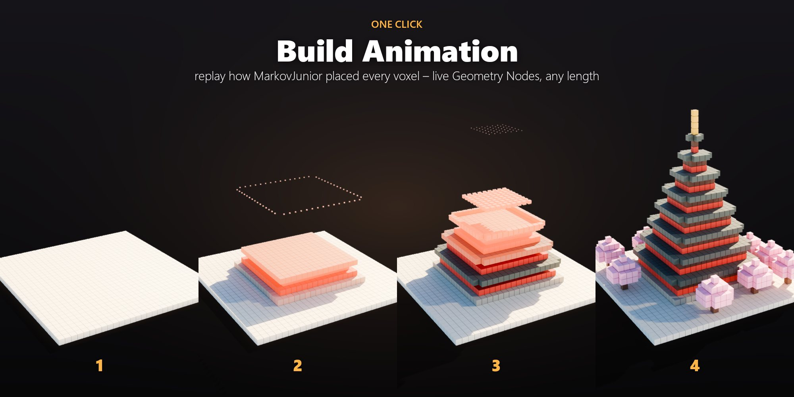
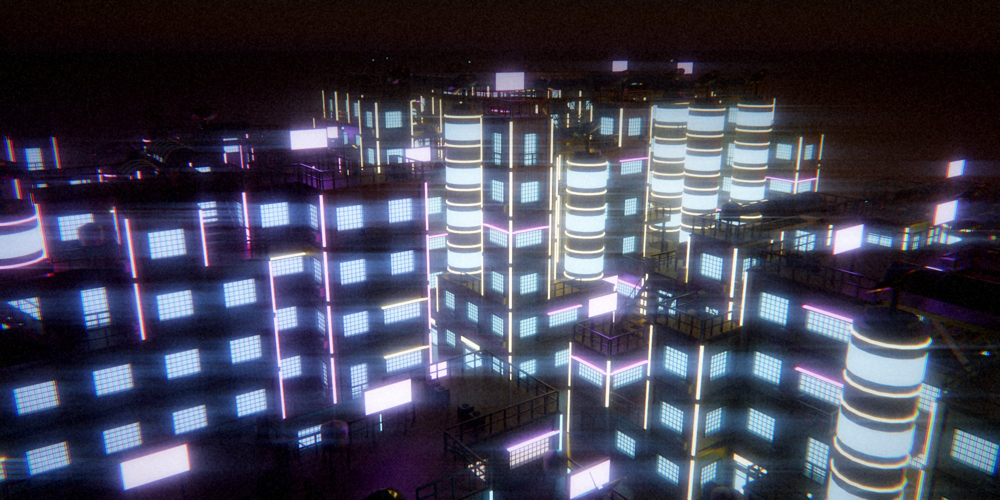
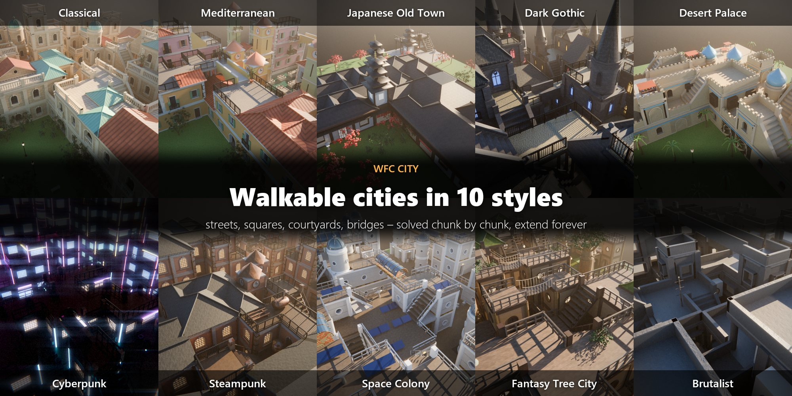

Cellscape DocumentationProcedural buildings and walkable WFC cities for Blender 4.2+
Cellscape is a Blender add-on with two generators:
Models – runs MarkovJunior rule sets (187 models, 52 in 3D) and builds the result as geometry.
WFC City – an infinite Wave Function Collapse city generator with 16 tilesets, street plans and regions.
Everything lives in the 3D Viewport sidebar: press N and open the Cellscape tab. It has three panels: Cellscape (models), WFC City and Look.
1Installation
Requirements: Blender 4.2 or newer (tested on 4.5 LTS and 5.2 LTS). No other software is needed.
Download cellscape.zip (do not unzip it).
In Blender: Edit › Preferences › Get Extensions, open the ⌄ menu at the top right and choose Install from Disk…, then pick the zip. You can also drag the zip into the Blender window.
Open a 3D Viewport, press N, and click the Cellscape tab.
To update, install the new zip the same way; Blender replaces the old version. To remove it, use Get Extensions › Cellscape › Uninstall.
2Quick start
Everything lives in the sidebar of the 3D Viewport: press N and open the Cellscape tab.
A building in ten seconds
In the Cellscape panel, keep the category Buildings and click the big preview to open the gallery.
Pick a model, e.g. ModernHouse, and press Generate. The result grows live at the 3D cursor.
Press Generate again for a new variation (a new random seed each time).
A city in thirty seconds
In the WFC City panel, click the preview and pick a style, e.g. Classical City.
Press Generate City. The city is solved chunk by chunk around the 3D cursor.
With the city selected, press +X to make it bigger, or Explore and fly around: the city grows around your view. Press Esc to stop.
Make it look good: in the Look panel press Setup Scene (sky, sun, shadows, colour management), then render with EEVEE or Cycles.
3Models (MarkovJunior)
Try it right here: this is Cellscape's MarkovJunior interpreter running in the browser with 20 of the 3D models. Pick a model, press New seed and watch the rules build it; drag to orbit. The same model and seed give the same result in Blender. Open the demo full screen.
MarkovJunior builds a result by rewriting a grid of symbols, rule after rule, until no rule applies. Each model is a small program (an XML file) – a maze grower, a dungeon digger, a castle builder.
3.1 Choosing a model
Control
What it does
Category
Buildings, Architecture & Megastructures, City & Infrastructure, Mazes & Paths, Pipes & Knots, Terrain & Nature, Cells & Patterns, five 2D categories and Other
Search (magnifier)
Find a model by name across all categories
Gallery
Click the large preview to see every model of the category with its icon
Model
The same choice as a list; models marked (slow) can take a minute or more
3.2 Generating
Setting
Meaning
Grid size X / Y / Z
Size of the grid in cells. Every model has a recommended size; the reset button next to it restores it. Bigger grids give bigger, more detailed results but take longer
Seed
The random seed. The same model, size and seed always give the same result
Random Seed (arrows button)
Pick a new seed every time you press Generate
Generate
Runs the model in the background and builds the result at the 3D cursor. Blender stays responsive; press Esc to stop
Options
Setting
Meaning
Voxel Size
Size of one cell in metres
Max Steps
Safety limit on the number of rule applications
Hide Symbols
Symbols (letters, see the Symbols line below it) that are not built, e.g. the air or helper symbols
Live Preview
Show the result while it grows (slightly slower)
Retry Failed Seeds
If a model reaches a contradiction (some WFC-based models can), try the next seed automatically
Merge Vertices
Weld touching voxels into one closed mesh
Optimize Faces
Merge flat areas into large faces (greedy meshing): far fewer polygons, same shape
2D Output (2D models)
Tiles: one thin voxel tile per cell, editable geometry. Image Plane: one plane with a pixel-exact texture, fastest for big grids. Auto picks tiles up to 160 × 160 cells
Variations – Count results with consecutive seeds, placed side by side with Gap metres between them. Useful to build an asset library or to compare seeds.
Export – Export .vox saves the selected generated object as a MagicaVoxel file (the model is run again with its seed, so the file is exact).
Every generated object remembers its model, size, seed and voxel size, so you can always rebuild or export it.
3.3 Build Animation

Select an object made with Generate (best with 3D models) and press Build Animation (play icon in the Cellscape panel). Cellscape runs the model again with the same seed and records the step at which every voxel got its final value. A new object "<name> Build" replays the construction on the timeline: voxels drop in from above, glow while they land and settle in their own colour. Press Space to play.
Setting
Meaning
Frames
Length of the build, starting at the scene's start frame
Fade
Share of the build one voxel takes to land (small: snappy, large: smooth)
Drop (voxels)
Height voxels fall from
Glow
Emission of freshly landed voxels
Gap
Size of the cubes relative to the voxel (1 = touching)
Hide Original
Hide the generated object so only the animation shows
The animation is a Geometry Nodes modifier: all settings stay editable in the modifier panel afterwards. The scene's end frame is extended to fit the build.
4Look

Setup Scene › Night: dark sky, lit windows and neon.
The Look panel decides how generated voxels are shaded. It works for models and for the voxel-based WFC tilesets.
Look
Description
Flat
One plain material per voxel colour. The fastest, good for stylised renders and export
Palette
All objects share one palette texture (16 × 16 colour cells). Themes recolour everything at once; windows and lamps glow
Detailed
Procedural materials by surface type: brick, stone, wood, glass, foliage, water, plus geometry details
Setting
Meaning
Geometry Details
Window frames, grass tufts and leafy crowns (Detailed look)
Grass
Density of the grass tufts
Bevel Edges
Soft rounded voxel edges at render time
Theme (Palette look)
Original, Autumn, Winter, Gothic, Red Sandstone, White City, Night – or Loaded Palette to snap every colour to a .gpl / .csv palette file of your own
Export Palette
Save the palette as palette.png, palette_emission.png and palette.gpl (MagicaVoxel, Aseprite, game engines)
Apply to New Results
Give every new result the current look automatically
Apply Look
Apply the look to the selected generated objects (a selected WFC city restyles its modules)
Setup Scene / Night
Sky, sun, soft shadows and AgX colour management; Night gives a dark sky and lit windows
5WFC City
Wave Function Collapse places modules (tiles) in a 3D grid so that every face matches its neighbour. Cellscape solves the grid in square chunks; finished chunks stay fixed, so the city can grow forever without seams.
5.1 Tilesets

The ten terraced styles.
Tileset
Cell
What it makes
Voxel City
2 m
Roads, plazas, parks and multi-storey voxel buildings in three styles
Kenney City (CC0)
2 m
Low-poly roads, buildings and parks by Kenney, one layer
Stone corridors, doors, rooms, junctions and treasure; closed by walls, every floor cell reachable
Space Station Kit
4 m
Hull, corridors, doors, rooms; closed by the hull, every floor cell reachable
Classical City and 9 more styles
4 m
Terraced cities with a street plan (see 5.2)
The ten terraced styles: Classical, Mediterranean Canal City (pastel houses, canals with quays and bridges), Japanese Old Town (timber frames, curved tiled roofs, pagodas, cherry trees), Dark Gothic City (pointed arches, buttresses, spires), Desert Palace & Bazaar (horseshoe arches, onion domes, market stalls, palms), Cyberpunk Megacity (neon, rendered at night), Steampunk Industrial City (brick factories, copper pipes, clock towers), Space Colony (habitats, tubes, landing pads), Fantasy Tree City (houses around giant trunks, rope bridges) and Brutalist Dystopia (board-marked concrete megastructures).
5.2 Street plan (terraced styles)
Before WFC runs, the ground is cut into blocks:
Lanes (one cell wide) and avenues (two cells, with trees) at irregular intervals
Squares with fountains and statues at some crossings
Gardens – whole blocks of lawn and trees
Courtyard blocks – wings of buildings along the streets around a green courtyard, entered through arched passages
Every block draws its own height (one storey to six) and roof family (tiles or copper), so neighbouring blocks differ. Inside a block buildings stand side by side; their flat tops are terraces with balustrades, stairs lead from level to level, bridges cross the lanes. Each style has its own plan: Cyberpunk and Brutalist build high, the Japanese town stays low, the Tree City has more gardens, the Desert has large bazaar squares.
The plan follows the city's Seed: a new seed gives a new layout, the same seed always the same city.
5.3 Settings
Setting
Meaning
X / Y
City size in cells (rounded up to whole chunks)
Height
Number of cell layers (storeys); one-layer tilesets ignore it
Seed / random
Seed of the city and of its street plan
Cell Size
Size of one cell in metres; set to the tileset's native size when you pick a tileset
Chunk
Cells per chunk side. Larger chunks look more coherent but take longer to solve
Live Preview / Speed
Show the city while it is solved; Speed is cells per second (0 = as fast as possible)
Generate City
Make a new city around the 3D cursor
5.4 Working with a city
Select a city object to see the Active city box:
−X / +X / −Y / +Y – add a row of chunks on that side.
Explore with Radius – keeps solving chunks around the centre of the viewport while you move; press Esc or Stop to end.
Bake to Mesh – turns the instanced city into one regular mesh object for editing or export.
Export GLB / Export FBX – exports the city with instances expanded, for game engines.
A city is one object: a point per cell plus a Geometry Nodes modifier that instances the modules. It stays light even with thousands of cells, and it can be extended again after the file is saved and reopened.
5.5 Regions
Regions restrict what may appear in a part of the city.
Place the 3D cursor and press Add Region; scale and move the box.
In the region's fields write Include Tags (only tiles with one of these tags) and/or Exclude Tags (no tiles with these tags), comma separated.
Press Regenerate Region to re-solve only the cells inside the box. If the region cannot be solved with its rules, a ring of one or two cells around it is re-solved as well.
With Regions switched on, Generate City and Extend respect every region box in the scene. The panel lists the tags of the current tileset. Useful tags:
Examples: a box with Includepark makes a park; Excludetower keeps towers out of a square; Includeroom, treasure in a dungeon makes a treasure hall.
5.6 Your own modules (Custom Collection)
Make a collection with one mesh object per module.
Model each module in a 1 × 1 × 1 cell: x and y from −0.5 to 0.5, z from 0 to 1 (object origin at the bottom centre, transforms applied).
Two modules can stand next to each other when the vertices on their shared face have the same layout – Cellscape reads these "sockets" from the geometry, no setup needed. Empty space needs an empty module or open faces.
Optional custom properties on an object: mj_weight (how often it appears, default 1) and mj_no_rotation (do not use rotated copies).
Pick Custom Collection as the tileset, choose the collection and press Generate City.
6Performance tips
MarkovJunior runs in Python: most models finish in seconds; models marked (slow) can take a minute or more. Smaller grids are much faster.
Turn Live Preview off for the fastest generation.
For 2D models with very large grids use 2D Output › Image Plane.
For WFC cities, a chunk size of 8 is a good balance. Big cities: generate a small one and use Extend or Explore.
The Detailed look with Geometry Details adds geometry at render time; use Palette for large scenes and previews.
Bake a city to a mesh only when you need to edit or export it: the instanced city is lighter.
7Troubleshooting
Problem
Solution
The Cellscape tab is missing
Press N in a 3D Viewport; check that the extension is enabled in Preferences › Get Extensions
A model stops with "failed"
Some models can run into a contradiction for a given seed. Turn on Retry Failed Seeds or change the seed
Generation takes very long
Reduce the grid size, or press Esc to stop; slow models are marked (slow)
"unknown tag" when generating a city
A region box uses a tag the current tileset does not know; the message lists the valid tags
A chunk could not be solved
Rare with regions that are too strict. Loosen the region's tags or change the seed
Textures are pink after moving the file
Textures are packed into the .blend when a city is built; use File › External Data › Pack Resources if you replaced materials
8Credits and licences
Cellscape – MIT licence.
MarkovJunior by Maxim Gumin – MIT licence. The original models, tilesets, rules and samples are included with their licence (data/LICENSE_MarkovJunior.txt).
Kenney City Kit by Kenney (www.kenney.nl) – CC0.
Textures by ambientCG (ambientcg.com) – CC0. See data/textures/CREDITS.txt.
Mesh kits (Modern City, Dungeon, Space Station) and the tree generator come from the author's own add-ons.
When you redistribute the add-on, keep the LICENSE file and the MarkovJunior copyright notice. Results you generate with Cellscape are yours to use, including commercially.